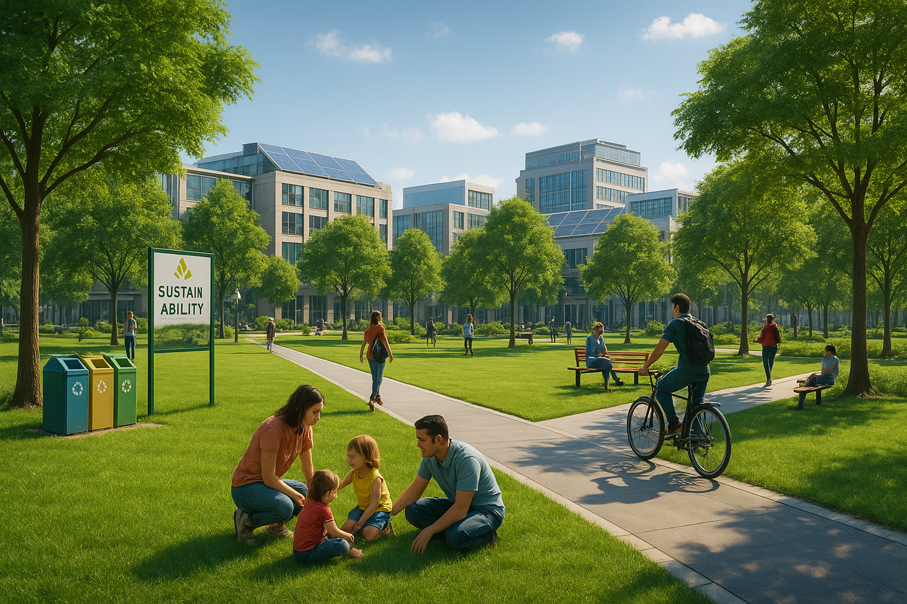

Notícies ITIC
Innovador proyecto urbano transforma el centro de la ciudad en un espacio sostenible
En un esfuerzo por revitalizar el centro urbano y fomentar prácticas ecológicas, el Ayuntamiento ha lanzado un
ambicioso proyecto llamado “Verde Ciudad”. Este plan tiene como objetivo principal convertir las áreas más
concurridas en espacios verdes, mejorando la calidad de vida de los habitantes y promoviendo el uso responsable
de recursos naturales.
El proyecto ha sido diseñado tras varios meses de consultas con expertos en medio ambiente, urbanismo y
participación ciudadana. Se espera que esta transformación no solo embellezca la ciudad, sino que también ayude
a mitigar los efectos del cambio climático y a crear un entorno más saludable para todos.

El proyecto incluye varias iniciativas destacadas, entre ellas:
- La creación de 15 nuevos parques urbanos.
- La instalación de sistemas de recolección de agua de lluvia en edificios
públicos.
- La plantación de 3,000 árboles autóctonos en diferentes zonas de la
ciudad.
Además, “Verde Ciudad” contempla beneficios concretos para la comunidad, tales como:
- Reducción del índice de contaminación ambiental.
- Espacios recreativos para familias y niños.
- Promoción de transporte sostenible mediante carriles bici y estaciones de bicicletas compartidas.
Las autoridades municipales han invitado a los ciudadanos a participar activamente, ofreciendo talleres y
actividades para aprender sobre sostenibilidad. Para comprender mejor algunos términos clave, se ofrecen las
siguientes definiciones:
- Sostenibilidad
- - Capacidad de mantener un equilibrio ecológico sin agotar los recursos naturales.
- Urbanismo
- - Disciplina que estudia el desarrollo y planificación de las ciudades.
- Cambio climático
- - Alteración significativa y duradera del clima global causada por actividades humanas.
- Transporte sostenible
- - Medios de transporte que minimizan el impacto ambiental, como bicicletas o vehículos eléctricos.
- Espacios verdes
- - Áreas con vegetación que mejoran la calidad ambiental y ofrecen lugares de recreación.